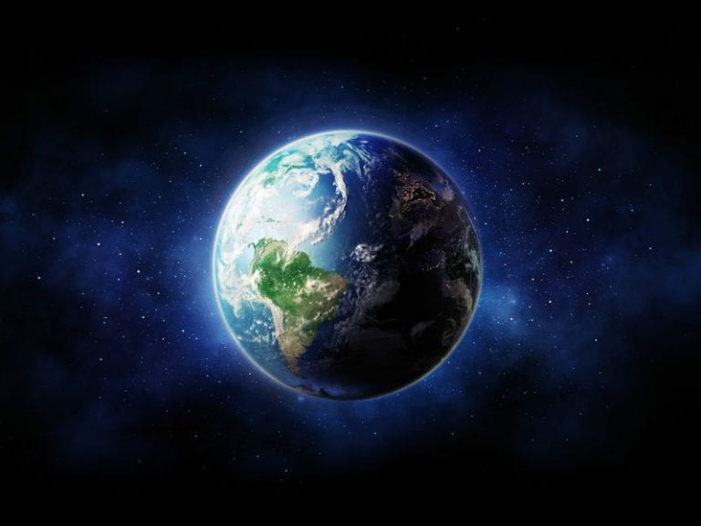

Merkúr
- A Merkúr a Naprendszer legbelső és legkisebb bolygója, a Nap körüli keringési ideje 88 nap.
- A Merkúr a Földről nézve fényesnek látszik, magnitúdója -2,0 és 5,5 között változik, azonban nehéz észlelni, mert a Földről nézve a Naptól mérhető legnagyobb szögtávolsága csak 28,3°. Reggel vagy este szürkületkor lehet megfigyelni.
- Reggel vagy este szürkületkor lehet megfigyelni.
Vénusz
- A Vénusz a második bolygó a Naptól, keringési ideje 224,7 földi nap.
- Nevét Venusról, a szépség római istennőjéről kapta.
- Mivel a Vénusz kering a Nap körül és közelebb van hozzá, mint a Föld, ezért néhány hónapig a Naptól keletre, később néhány hónapig a Naptól nyugatra látható, változó távolságra.

Föld
- Az emberi életre alkalmas bolygó. Felszínén az élethez elegendő mennyiségű víz található. Több millió faj, köztük az ember élőhelye is.
- A Naptól számított harmadik bolygó a Naprendszerben.
- A Föld felszínét a Föld mágneses mezője védi a nagyenergiájú kozmikus sugárzástól. A Naprendszer külső körülményei a várakozások szerint még mintegy 1,5 milliárd évig támogatják az élet jelenlétét, de ezután a mind fényesebbé váló Nap el fogja tüntetni a bioszférát.

Mars
- A Mars a Naptól számított negyedik bolygó a Naprendszerben.
- Szabad szemmel is könnyedén látható az éjszakai égbolton.
- A Mars a harmadik legnagyobb kőzetbolygó, számos rendkívüli felszíni képződménnyel.

Jupiter
- A Jupiter az ötödik bolygó a Naptól, és messze a legnagyobb bolygó a Naprendszerben.
- Óriásbolygó, tömege két és félszerese az összes többi bolygó együttes tömegének.
- A többi óriásbolygóval (Szaturnusz, Uránusz, Neptunusz) együtt gyakran Jupiter-típusú, vagy külső bolygóknak nevezik.

Szaturnusz
- A Szaturnusz a hatodik bolygó a Naptól számítva, a második legnagyobb a Naprendszerben a Jupiter után.
- Egyike annak az öt bolygónak, ami a Földről szabad szemmel is látható.
- A Szaturnusznak látványos, jégből és törmelékekből álló gyűrűrendszere van.

Uránusz
- Az Uránusz a Naprendszer hetedik bolygója.
- Óriásbolygó, a harmadik legnagyobb átmérőjű és a negyedik legnagyobb tömegű.
- Az Uránusz felfedezését 1781. március 13-ától számítjuk, mert ekkor pillantotta meg először Sir William Herschel.

Neptunusz
- A Neptunusz a Naptól számítva a nyolcadik, legkülső bolygó a Naprendszerben.
- Csillagrendszerünk négy óriásbolygója közül a méretét tekintve az utolsó, a tömegét nézve viszont az Uránuszt megelőzve a harmadik legnagyobb.
- Színe miatt Neptunusról, a tengerek római istenéről nevezték el.